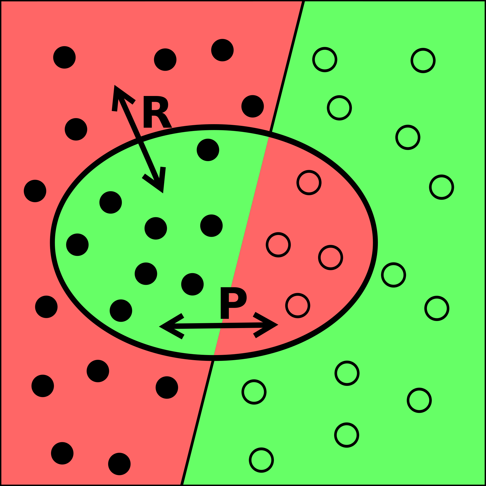
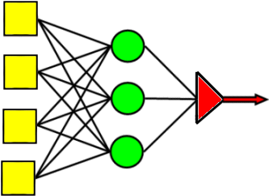

Mi chiamo Marco Odore e sono nato il 27 Ottobre 1985 nella bellissima città di Sorrento. Fin da piccolo ho avuto a che fare, tra alti e bassi, con diversi computer (il mio primo PC è stato un commodore 64). Inizialmente il mio interesse per queste macchine era legato alle possibilità ludiche che mi fornivano. Ho infatti passato un quantitativo enorme di ore, sui diversi computer di cui sono entrato in possesso, per giocare ai più svariati videogame esistenti (che sono tutt'ora una mia grande passione). Dopo essermi diplomato, ed in seguito ad un periodo in cui ho provato molti lavori differenti, ho deciso di iscrivermi alla facoltà di Scienze Informatiche di Milano, che è risultato essere il periodo più bello e motivante della mia esistenza fino ad'ora. Passando del tempo nell'ambiente accademico, risultato essere estremamente competitivo, la mia voglia di crescere ed imparare è aumentata esponenzialmente. È in questo contesto che ho iniziato il mio avvicinamento all'ambito dell'intelligenza artificiale, decidendo di realizzare la mia tesi di laurea sul Machine Learning, trattando nello specifico della classificazione automatica di contenuti testuali.
In ogni caso l'informatica non è l'unica cosa che mi piace. Sembra un po' banale scriverlo oggi giorno, ma nel tempo libero adoro viaggiare, giocare ai videogame, lo sport (praticarlo!), ascoltare musica e disegnare.
11/2014 - 07/2015 Vega Informatica S.r.l. , MILANO (MI) (informatica/elettronica) Tirocinante/Stagista nel campo ricerca e sviluppo (engineering e progettazione) Principali attività e responsabilità: Tirocinante nel settore aziendale di ricerca e sviluppo. Lo scopo del tirocinio era la realizzazione di un programma in Java per la classificazione automatica di testi brevi, tramite l'utilizzo di algoritmi di Machine Learning. Competenze e obiettivi raggiunti: Conoscenza dei principali algoritmi di Machine Learning (Naive Bayes, SVM, Decision Tree, Reti neurali) Conoscenza approfondita della piattaforma opensource WEKA Approfondimento di Java, del DBMS postgres, git, bash scripting Assunto come:impiegato o intermedio stage/tirocinio
Analisi e sviluppo di algoritmi di Natural Language Processing e Machine Learning nell'ambito della Classificazione Automatica di contenuti testuali
 Il lavoro di tesi è stato sviluppato nell’ambito della classificazione di testi digitali espressi in linguaggio naturale (Text Classification) avvalendosi di tecniche di Machine Learning. Gli argomenti trattati riguardano un ambito di crescente interesse, grazie soprattutto alla disponibilità sempre maggiore di contenuti testuali in formato a digitale, la cui organizzazione ed elaborazione automatica rappresentano due delle sfide che la comunità scientifica da un lato ed esperti professionisti dall’altro si trovano a ad affrontare al giorno d’oggi. Lo scopo principale del lavoro è stato quello di fornire un insieme di linee guida per e la classificazione di contenuti testuali brevi espressi in linguaggio naturale, tramite l’individuazione di quelle configurazioni che meglio si adattano alle caratteristiche dei benchmark esaminati; configurazioni legate tanto al contesto del Natural Language Processing (NLP) e degli algoritmi di classificazione utilizzati, quanto alla selezione degli attributi (features) più opportune.  Nella tesi sono stati trattati tre diversi algoritmi di Machine Learning, e cioè l'algoritmo probabilistico Naive Bayes, l'algortimo per la generazione di alberi di decisione, e le reti neurali multilivello.